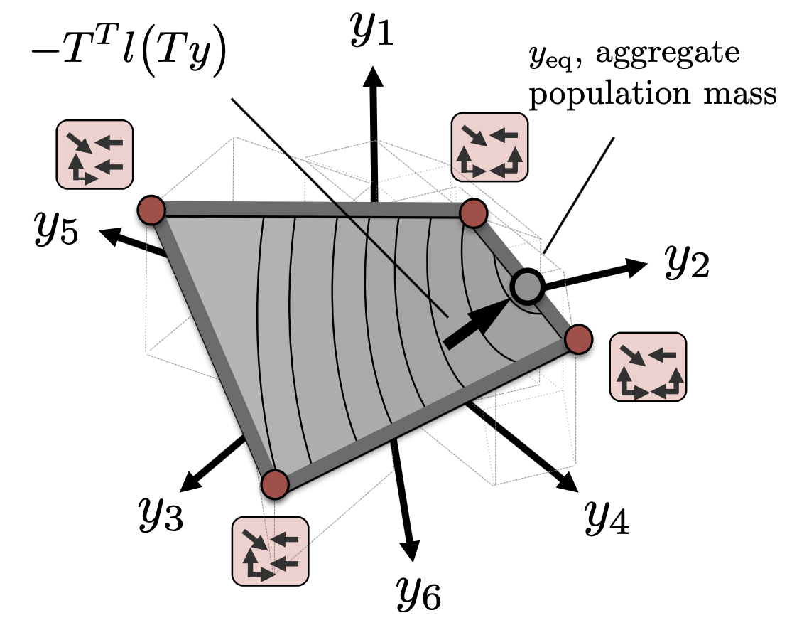
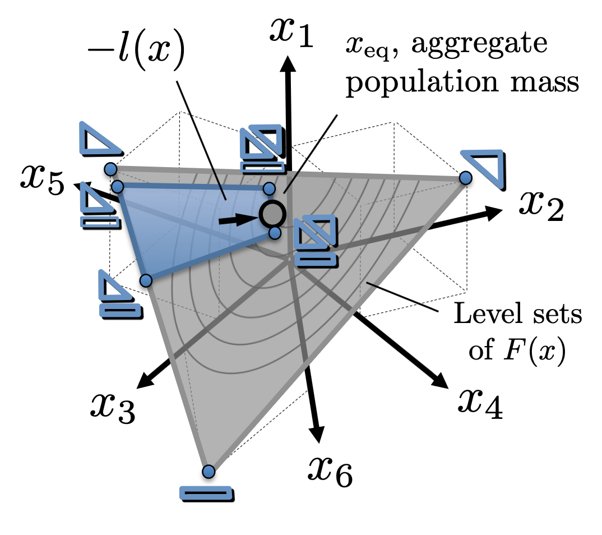
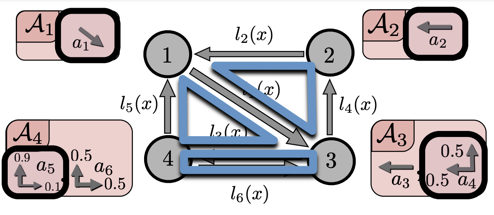
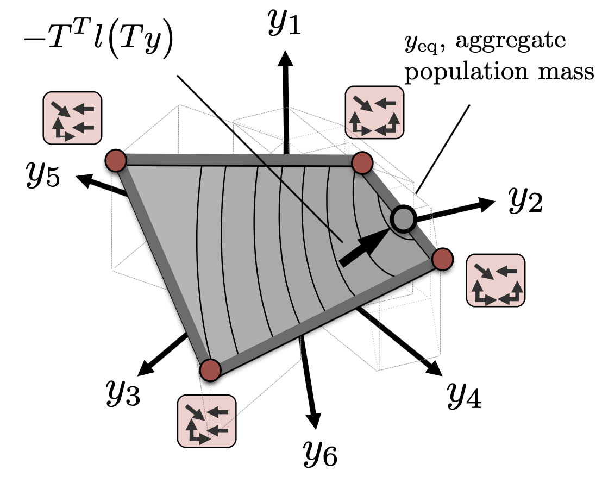
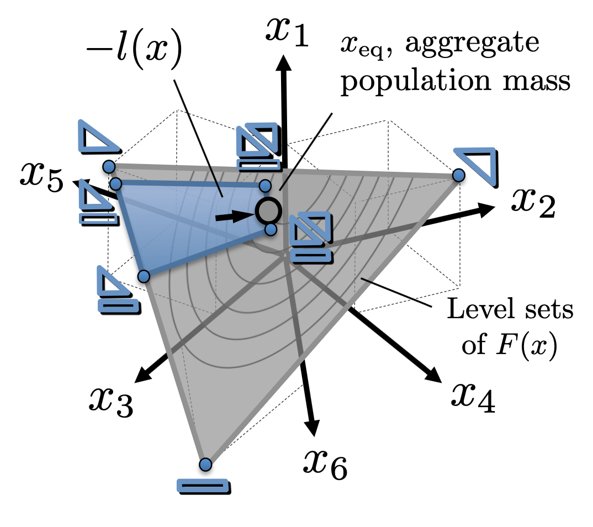
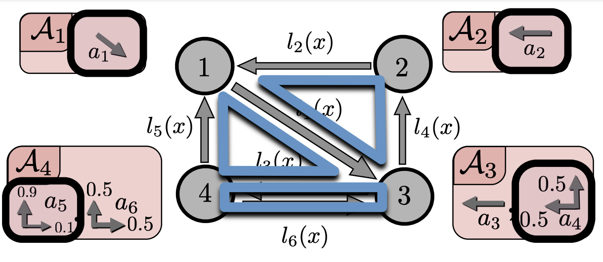
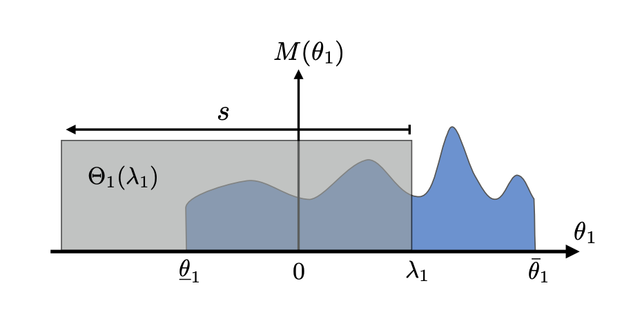
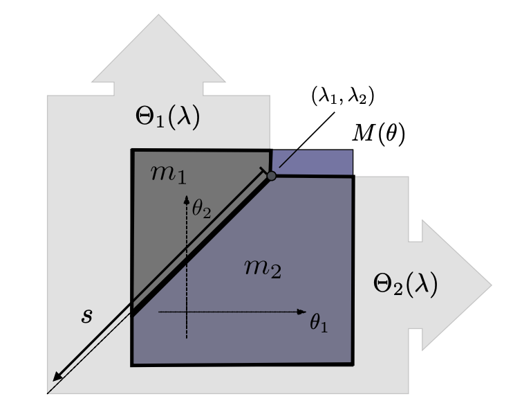
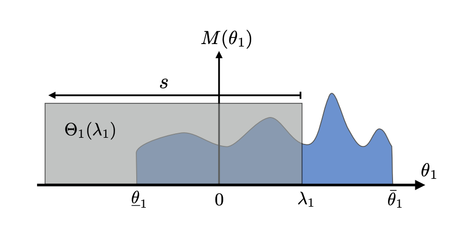
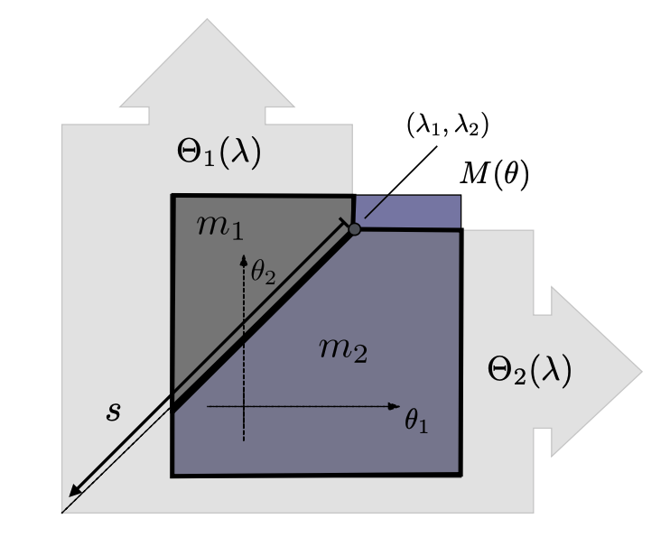

Publications


 





 



2025 - IN PREPARATION
- Calderone D.J., Oishi, M. Failure Modes from Social Value Orientation in Two-Player Open-Loop Linear-Quadratic Games, LCSS 2025 - IN PREPARATION
- Calderone, D.J. , Chasnov, B.J., Burden, S.A. and Ratliff, L.J., Consistent Conjectural Variations Equilibria: Dynamic Decompositions and Asymptotic Behavior. LCSS 2025 - IN PREPARATION
- Sullivan J., Calderone, D.J. , Gonzales J., Burden S., Ratliff, L.J., Decomposition and Learning Congestion For Multi-Agent Path Finding and Task Assignment 2024 - IN PREPARATION
- Calderone, D.J. , and Ratliff, L.J., Multi-Dimensional Continuous-Type Population Potential Games 2024 - SUBMITTED
- Calderone, D.J. , Khanna, A., Dubey A., and Ratliff, L.J., A Hybrid Routing Game/Vehicle Routing Approach to Multi-Modal Transportation Choice in Chattanooga Tennesse 2024 - IN PREPARATION
- Calderone D.J., Oishi, M. The Impact of Social Value Orientation on Nash Equilibria of Two Player Quadratic Games (submitted LCSS 2025) arxiv preprint
- Mceowen, S., Calderone, D., Tiwary, A., Zhou, J., Kim, T., Elango, P., Acikmese, B. Auto-Tuned Primal-Dual Successive Convexification for Hypersonic Reentry Guidance Scitech 2025
- Mceowen, S., Calderone, D., Tiwary, A., Elango, P. Kim, T. Acikmese, B. Auto-tuned Primal-Dual Successive Convexification for Hypersonic Reentry Guidance JGCD 2025 arxiv preprint
- DiPirro, R., Sandhaus, H., Goedicke, D., Calderone, D., Oishi, M., Ju, W. Characterizing Cultural Differences in Naturalistic Driving Interactions, ITSC 2024
- Calderone, D.J. , Chasnov, B.J., Burden, S.A. and Ratliff, L.J., 2023 Consistent Conjectural Variations Equilibria: Characterization & Stability for a Class of Continuous Games. IEEE Control Systems Letters. pdf (arxiv)
- Li, S.H., Yu, Y., Miguel, N.I., Calderone, D., Ratliff, L.J. and Açıkmeşe, B., 2023. Adaptive constraint satisfaction for Markov decision process congestion games: Application to transportation networks. Automatica, 151, p.110879. pdf
- Li, S.H.,Calderone, D. and Açıkmeşe, B., 2022. Congestion-aware path coordination game with Markov decision process dynamics. IEEE Control Systems Letters, 7, pp.431-436. pdf
- Yu, Y., Calderone, D., Li, S.H., Ratliff, L.J. and Açıkmeşe, B., 2022. Variable demand and multi-commodity flow in Markovian network equilibrium. Automatica, 140, p.110224. pdf
- Mceowen, S., Sullivan, D., Calderone, D., Szmuk, M., Sheridan, O., Açıkmeşe, B. and Chasnov, B., 2022, March. Visual Modeling System for Optimization-Based Real-Time Trajectory Planning for Autonomous Aerial Drones. In 2022 IEEE Aerospace Conference (AERO) (pp. 1-9). IEEE. pdf
- de Badyn, M.H., Foight, D.R., Calderone, D., Mesbahi, M. and Smith, R.S., 2021. Graph-theoretic optimization for edge consensus. IFAC-PapersOnLine, 54(9), pp.533-538. pdf
- Calderone, D., Chasnov, B.J., Açıkmeşe, B., Burden, S.A. and Ratliff, L.J., December. 2020, Stability of gradient learning dynamics in continuous games: Scalar action spaces. In 2020 59th IEEE Conference on Decision and Control (CDC) (pp. 3543-3548). IEEE. pdf
- Chasnov, B.J., Calderone, D., Açıkmeşe, B., Burden, S.A. and Ratliff, L.J., 2020, Stability of Gradient Learning Dynamics in Continuous Games: Vector Action Spaces. arXiv preprint arXiv:2011.05562. pdf
- Calderone, D. and Ratliff, L.J., December. Multi-Dimensional Continuous Type Population Potential Games. In 2019 IEEE 58th Conference on Decision and Control (CDC) (pp. 5138-5143). IEEE. pdf talk
- Li, S.H., Yu, Y., Calderone, D., Ratliff, L. and Açrkmeşe, B., 2019, July. Tolling for constraint satisfaction in markov decision process congestion games. In 2019 American Control Conference (ACC) (pp. 1238-1243). IEEE.
- Li, S.H., Calderone, D., Ratliff, L. and Açıkmeşe, B., 2019, December. Sensitivity analysis for markov decision process congestion games. In 2019 IEEE 58th Conference on Decision and Control (CDC) (pp. 1301-1306). IEEE. pdf
- Chasnov, B., Ratliff, L.J., Calderone, D., Mazumdar, E. and Burden, S.A., 2019. Finite-Time Convergence of Gradient-Based Learning in Continuous Games. pdf
- Calderone, D. and Sastry, S.S., 2017, April. Markov decision process routing games. In Proceedings of the 8th International Conference on Cyber-Physical Systems (pp. 273-279). pdf
- Calderone, D. and Shankar, S., 2017, October. Infinite-horizon average-cost markov decision process routing games. In 2017 IEEE 20th International Conference on Intelligent Transportation Systems (ITSC) (pp. 1-6). IEEE. pdf talk
- Calderone, D., Dong, R. and Sastry, S.S., 2017, October. External-cost continuous-type wardrop equilibria in routing games. In 2017 IEEE 20th International Conference on Intelligent Transportation Systems (ITSC) (pp. 1-6). IEEE. pdf talk
- Calderone, D., Mazumdar, E., Ratliff, L.J. and Sastry, S.S., December. Understanding the impact of parking on urban mobility via routing games on queue-flow networks. In 2016 IEEE 55th Conference on Decision and Control (CDC) (pp. 7605-7610). IEEE. 2016 pdf talk
- Calderone, D.J., Ratliff, L.J. and Sastry, S.S., 2015, December. Lane pricing via decision-theoretic lane changing model of driver behavior. In 2015 54th IEEE Conference on Decision and Control (CDC) (pp. 3457-3462). IEEE. pdf
- Calderone, D., Ratliff, L.J. and Sastry, S.S., 2014. Pricing for Coordination in Open–Loop Differential Games. IFAC Proceedings Volumes, 47(3), pp.9001-9006. pdf
- Calderone, D.J., Ratliff, L.J. and Sastry, S.S., 2013, December. Pricing design for robustness in linear quadratic games. In 52nd IEEE Conference on Decision and Control (pp. 4349-4354). IEEE. pdf
- Coogan, S., Ratliff, L.J. , Calderone, D., Tomlin, C. and Sastry, S.S., 2013, June. Energy management via pricing in LQ dynamic games. In 2013 American Control Conference (pp. 443-448). IEEE. pdf
- Ratliff, L.J., Coogan, S. , Calderone, D. and Sastry, S.S., 2012, October. Pricing in linear-quadratic dynamic games. In 2012 50th Annual Allerton Conference on Communication, Control, and Computing (Allerton) (pp. 1798-1805). IEEE. pdf